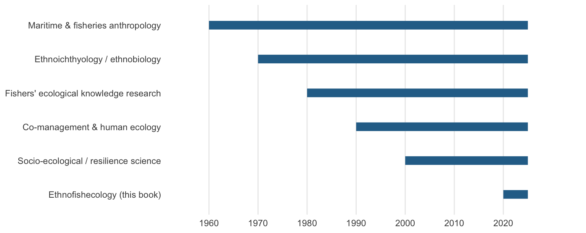

5 Integration with Human Ecology and Ethnoecology (1990s–2000s)
5.1 Introduction
During the 1990s and 2000s, ethnofishecology began integrating more explicitly with human ecology and ethnoecology, recognizing that fisheries are dynamic socio-ecological systems. Researchers increasingly asked how local practice, ecological feedback, and governance co-produced outcomes. The result was a move from description alone toward frameworks that could explain adaptation, learning, and institutional change.
NoteWhat integration means here
Integration does not mean that local ecological knowledge was reduced to a proxy for survey data. It means that scientific and local knowledge were paired, triangulated, and treated as complementary sources of evidence with their own uncertainties.
5.2 A short timeline of the field’s intellectual strands
5.3 Methods and Evidence
The integration phase was defined by mixed methods. Ethnographic observation, interviews, participatory mapping, and oral-history approaches were paired with catch records, habitat information, and other ecological data. This made local ecological knowledge legible to interdisciplinary research without reducing it to a simple proxy for survey data. Reviews from the period emphasize validation, triangulation, and co-production rather than a binary choice between scientific and local knowledge (Begossi et al. 2015; Berkström et al. 2019).
5.4 Key Themes
- Human ecological models and cultural adaptation. Human ecological models described how communities adapt to changes in stocks, markets, and governance. In the fisheries literature, the Cultural Adaptation Template organized feedback among ecological information, collaborative process, and food security rather than treating fishery behaviour as a static response to prices or biomass alone (Begossi et al. 2015).
- Local ecological knowledge and co-management. Researchers documented how fishers and Indigenous communities hold detailed knowledge about habitat connectivity, seasonal migration, and fishing grounds. That knowledge proved particularly useful in data-poor settings and in participatory management processes where legitimacy depended on more than biological accuracy (Armengol et al. 2018; Berkström et al. 2019). The edited volume Fishers’ Knowledge in Fisheries Science and Management consolidated much of this case-study evidence and set expectations for what fishers’ knowledge could contribute to formal assessment (Haggan et al. 2007).
- Incentives and stewardship. The period broadened the discussion to stewardship incentives, including payments for environmental services and other mechanisms that reward conservation behaviour. These ideas were not framed as universal solutions but as ways to align ecological goals, fisher incentives, and local institutional capacity in small-scale fisheries (Begossi et al. 2015).
- Historical and global perspectives. Comparative work across regions showed that artisanal knowledge systems remained analytically important even under rapid modernization. The point was not nostalgia. Contemporary management still depends on understanding historically sedimented fishing practices and institutions.
5.5 Conclusion
The integration phase expanded ethnofishecology beyond description to incorporate models, participatory processes, and incentive design. By linking human ecology with fisheries research, scholars developed tools for asking how communities respond to ecological change and how collaborative management systems can use local knowledge without romanticizing it.
Armengol, L. de, M. Prieto-Castillo, I. Ruiz-Mallén, and E. Corbera. 2018. A systematic review of co-managed small-scale fisheries: Social diversity and adaptive management improve outcomes. Global Environmental Change 52:212–225.
Begossi, A., M. Clauzet, and R. Dyball. 2015. Fisheries, ethnoecology, human ecology and food security: A review of concepts, collaboration and teaching. Seguranca Alimentar e Nutricional 22(1):574–590.
Berkström, C., M. Papadopoulos, N. S. Jiddawi, and L. M. Nordlund. 2019. Fishers’ local ecological knowledge on connectivity and seascape management. Frontiers in Marine Science 6:130.
Haggan, N., B. Neis, and I. G. Baird, editors. 2007. Fishers’ knowledge in fisheries science and management. UNESCO, Paris.